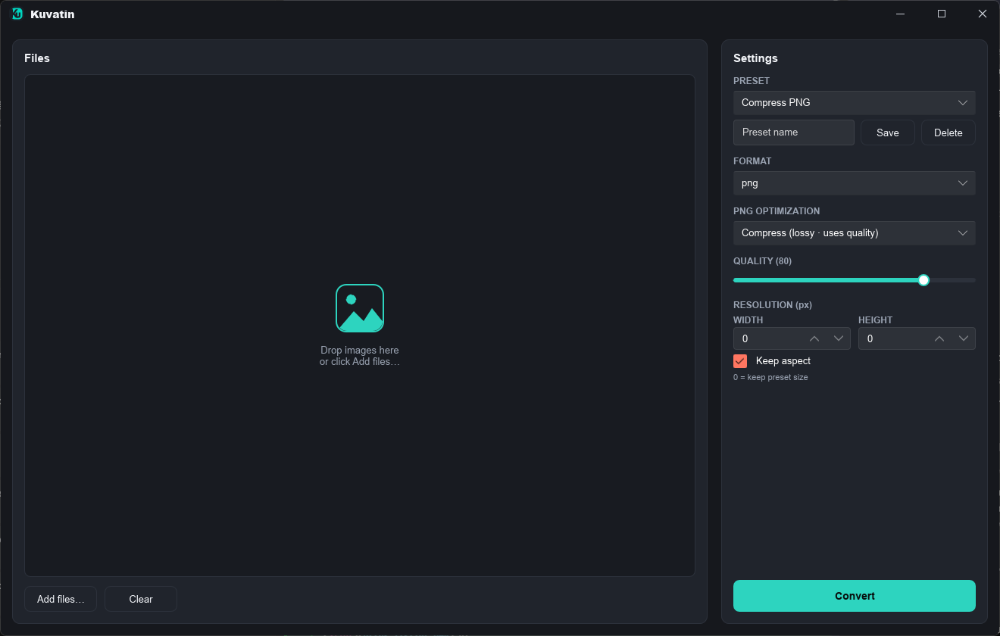

Free & open source · Windows · Rust
Shrink images without the busywork.
A tiny native Windows app for batch image work — compression, format conversion, resizing and cropping — right from your Explorer right-click menu.

Scroll